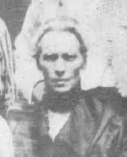

|
|
 Rose Ann QUINN (1849-1908) |
Rose Ann QUINN
• She has conflicting birth information of Apr 1851 in Crosscavanagh, Tyrone Co., Ireland. 6 • She emigrated about 1875 from Ireland. 6 • She appeared in the 1880 census on 8 Jun 1880 in Pittsburgh, Allegheny, PA. 7 • She appeared in the 1900 census on 12 Jun 1900 in Pittsburgh, Allegheny, PA. 6 Rose was listed along with her two daughters and 4 boarders living at 2104 Tustin St. She was listed as having had 8 children, 4 of whom were still living. Rose married Nicholas HOEY, son of Nicholas HOEY and Elizabeth (HOEY), on 29 Feb 1876 in St. Thomas, Braddock, PA.1 2 (Nicholas HOEY was born in 1846 in Mayo Co., Ireland 3 8, died on 27 Jun 1891 in Pittsburgh, Allegheny, PA 9 10 11 12 and was buried on 29 Jun 1891 in Calvary Cemetery, Pittsburgh, PA 5 9 10.) |
1 Thomas Hoey, Telephone Conversation with Bernard Brennan, (Pittsburgh, PA), Jun 1999.
2 Church of Jesus Christ of Latter Day Saints, FamilySearch® International Genealogical Index, (Salt Lake City, Utah, Intellectual Reserve, 2001, http://www.familysearch.org).
3 Thomas Hoey, Cemetery Headstone, Calvary Cemetery, (Pittsburgh, PA, May 1999).
4 Commonwealth of Pennsylvania, Department of Health, Bureau of Vital Statistics, Death Certificate - Rose Quinn Hoey, (11 Mar 1908).
5 Calvary Cemetery, Cemetery Records, (Pittsburgh, PA, 22 Oct 1999).
6 Pennsylvania, Allegheny County, 1900 U.S. Census, Population Schedule, (Washington, D.C., National Archives and Records Administration), ED 168, Sheet 13, Line 30.
7 Pennsylvania, Allegheny County, 1880 U.S. Census, Population Schedule, (Washington, D.C., National Archives and Records Administration), ED 129, Sheet 27, Line 26.
8 Thomas Hoey, Oral Interview of Mary Elizabeth Hoey Walsh, (Pittsburgh, PA).
9 City of Pittsburgh, Death Certificate - Nicholas Hoey, (Pittsburgh, PA, 1 Jul 1891).
10 Church of Jesus Christ of Latter Day Saints, Pittsburgh City Deaths, 1870-1905, (Salt Lake City, Utah, 2011, FamilySearch® Labs http://search.labs.familysearch.org).
11 Funeral Home, Mass Card, (Thomas Hoey).
12 Thomas Hoey, Oral Interview of James Hoey, (Pittsburgh, PA).
{kind=link}